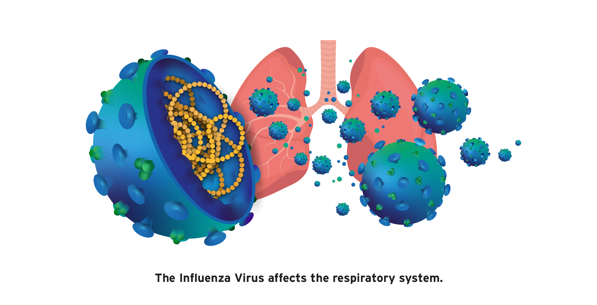

What is Flu
Influenza, commonly known as the "flu," is an extremely contagious respiratory illness caused by influenza A or B viruses. Flu appears most frequently in winter and early spring. The flu virus
attacks the body by spreading through the upper and/or lower respiratory tract.

What's the difference between a cold and flu?
The common cold and flu are both contagious viral infections of the respiratory tract. Although the symptoms can be similar, flu is much worse. A cold may drag you down a bit, but the flu can make you shudder
at the very thought of getting out of bed.Congestion, sore throat, and sneezing are common with colds. Both cold and flu may bring coughing (less common), headache, and chest discomfort. With the flu, though, you are likely to run
a high fever for several days and have body aches, fatigue, and weakness. Symptoms of the flu also tend to come on abruptly. Usually, complications from colds are relatively minor, but a case of flu can lead to a life-threatening illness
such as pneumonia. More than 100 types of cold viruses are known, and new strains of flu evolve every few years. Since both diseases are viral, antibiotics cannot conquer cold or flu. Remember: Antibiotics only treat bacterial infections.
Four antiviral medications are available to treat flu. But there are no medications that specifically defeat the common cold. Antibiotics may be helpful only if there is a secondary bacterial infection.
How Does a Flu Virus Make Me Sick?
Flu viruses enter the body through the mucus membranes of your nose, eyes, or mouth. Every time you touch your hand to one of these areas, you are possibly infecting yourself with a virus. This makes it very important
to keep your hands germ-free with frequent and thorough hand washing. Encourage family members to do the same to stay well and prevent flu.
What Are the Different Types of Flu?
There are three types of flu viruses: A, B, and C. Type A and B cause the annual influenza epidemics that have up to 20% of the population sniffling, aching, coughing, and running high fevers. Type C also causes
flu; however, type C flu symptoms are much less severe. The flu is linked to between 3,000 and 49,000 deaths and 200,000 hospitalizations each year in the United States. The seasonal flu vaccine was created to try to avert these epidemics.
How is flu spread?
The flu virus is spread from person to person through respiratory secretions and typically sweeps through large groups of people who spend time in close contact, such as in daycare facilities, classrooms, college dormitories, military barracks, offices,
and nursing homes. Flu is spread when you inhale droplets in the air that contain the flu virus, make direct contact with respiratory secretions through sharing drinks or utensils, or handle items contaminated by an infected person.
In the latter case, the flu virus on your skin can infect you when you touch or rub your eyes, nose, or mouth. That's why frequent and thorough handwashing is a key way to limit the spread of influenza. Flu symptoms start to develop
from one to four days after infection with the virus.
Who's at greatest risk for flu complications?
While anyone can get flu, infants, the elderly, pregnant women, and people with chronic ailments such as diabetes, heart disease, lung disease, and HIV are at highest risk for flu complications. Despite advances
in flu prevention and treatment, the CDC estimates that deaths related to influenza range from 3,000 to 49,000 deaths in the United States each year. Specific strains of flu can be prevented by a flu vaccine, either a flu shot or nasal
spray flu vaccine. In addition, antiviral medications are available to prevent flu. These drugs may help reduce the severity and the duration of flu and are best used within the first 48 hours of the appearance of flu symptoms.